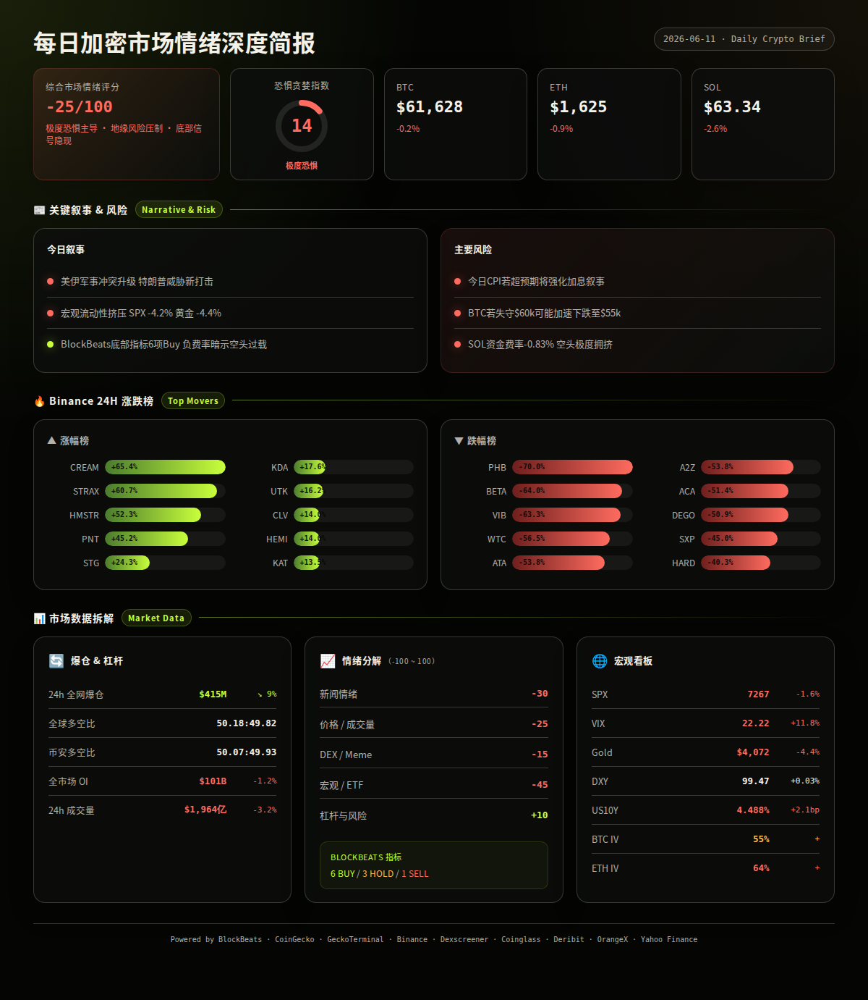
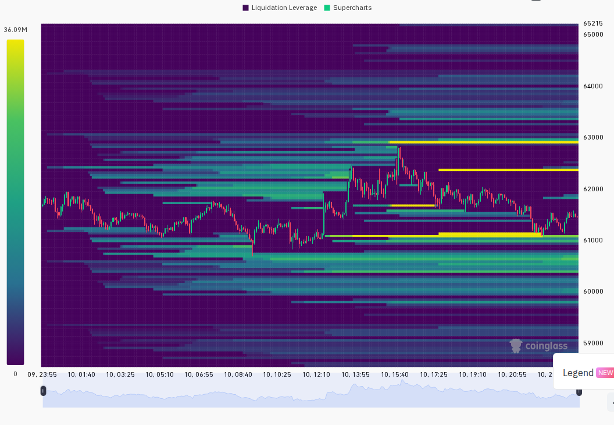
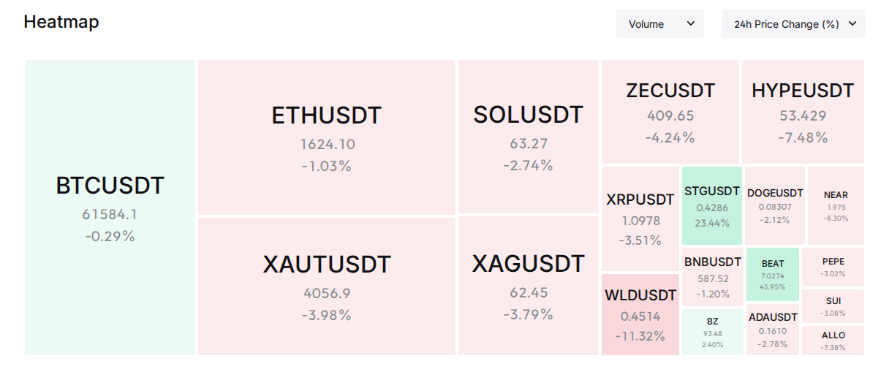

2026年6月11日 08:00 UTC+8
市场处于极度恐惧状态（F&G 14），美伊军事冲突升级主导宏观情绪，美股下跌、黄金暴跌4.4%，但加密市场展现相对韧性——BTC仅微跌0.2%守住$61k。链上指标出现多个底部买入信号，负资金费率暗示空头过度拥挤，但地缘政治尾部风险仍是核心不确定性。
24h变化: 情绪极度恐惧(14) | BTC -0.2% | ETH -0.9% | SOL -2.6% | VIX 22.2(恐慌升温) | 成交量 -3.2% | 爆仓 $4.15亿(-9%) (multi-source)
— 地缘政治：美伊冲突升级 —
信息 1: 美军连续两晚轰炸伊朗，特朗普威胁"彻底消灭伊朗"并考虑发动"短促猛烈"军事行动，随后又称伊朗请求停火、将很快停止。伊朗官方否认与美国有任何接触。 (BlockBeats)
信息 2: 地缘风险推动美股期货下跌，纳斯达克跌近2%，半导体板块遭华尔街AI股神精准做空。标普500 5日累计下跌4.2%。 (BlockBeats, Yahoo Finance)
信息 3: 现货黄金跌至$4,072，创去年11月以来新低，日内一度暴跌3.54%。黄金与BTC同步走弱，表明当前环境下两者均未被市场视为避险资产，流动性挤压效应明显。 (BlockBeats, Yahoo Finance)
— 宏观与监管 —
信息 4: 2026年美联储利率终局出现转向——今日CPI报告种下鹰派种子，加息主导降息的叙事正在形成。特朗普宣称"爱上通胀"，将物价上涨包装为可控发展。 (BlockBeats)
信息 5: 《CLARITY Act》加密监管法案遭遇双重挫折——伦理谈判破裂，参议院休会前仅剩31天窗口期。加密监管立法面临延期风险。 (BlockBeats)
信息 6: OpenAI预计推迟至明年上市，此前预期最早今年9月IPO。Oracle FY2026 Q4营收$192亿超预期但盘后暴跌近12%，AI高支出和融资计划引发担忧。 (BlockBeats)
— DeFi / 安全事件 —
信息 7: Raydium确认旧版AMM池遭攻击，损失$134万，官方国库全额赔偿。安全事件未蔓延至当前版本，但提醒DeFi协议持续面临攻击风险。 (BlockBeats)
— Meme / 小市值 —
信息 8: Solana链上CHANCE代币24小时暴涨1512%，但6小时回撤34.6%，呈现典型Pump & Dump特征。KINS上涨57%表现相对稳健。 (GeckoTerminal)
— 板块轮动 —
信息 9: CoinGecko板块24h涨幅前三: Arcade Games +58.8%, Telegram Apps +45.0%, DeFAI +32.1%。跌幅前三: Rebase Tokens -85.0%, DRC-20 -67.3%, Echo Launchpad -32.9%。游戏和AI相关赛道逆势活跃。 (CoinGecko)
— Binance涨跌榜 —
信息 10: 24h涨幅榜: CREAM +65.4%, STRAX +60.7%, HMSTR +52.3%, PNT +45.2%, STG +24.3%。24h跌幅榜: PHB -70%, BETA -64%, VIB -63.3%, WTC -56.5%, ATA -53.8%。极端涨跌幅集中于小市值代币，流动性稀薄导致价格剧烈波动。 (Binance)
风险 1: 美伊军事冲突进一步升级（特朗普威胁今日发动新打击）。→ 观察: 若美伊局势在24h内出现明确停火信号，加密市场可能出现5-10%的报复性反弹。失效条件: 若冲突扩大至霍尔木兹海峡航运中断，则BTC可能测试$55k支撑。 (BlockBeats, analysis)
风险 2: 今日CPI数据公布（预计北京时间20:30）。→ 观察: 若CPI超预期上行将强化加息叙事，利空风险资产；若低于预期则可能触发短暂风险偏好修复。失效条件: 若CPI符合预期，市场焦点将回到地缘政治。 (BlockBeats, analysis)
风险 3: 负资金费率极端化——BTC Binance -0.11%, SOL Binance -0.83%——空头拥挤可能触发轧空。→ 观察: 若BTC突破$62.5k阻力，空头平仓可能推动快速反弹至$64k+。失效条件: 若BTC跌破$60k关口，负费率将自我强化加速下跌。 (CoinGecko, analysis)
风险 4: 黄金单日暴跌4.4%——跨资产流动性挤压信号。→ 观察: 若黄金在$4000获得支撑反弹，BTC-Gold正相关性可能带动BTC企稳。失效条件: 若黄金继续跌破$3900，流动性危机可能蔓延至加密市场。 (Yahoo Finance, analysis)
风险 5: 山寨币抗跌指数发出卖出信号，ETH/SOL表现弱于BTC。→ 观察: 若BTC.D突破57%，山寨币可能进一步承压。失效条件: 若ETH/BTC汇率企稳回升，则山寨币情绪可能改善。 (BlockBeats, analysis)
非财务建议声明: 本报告仅提供市场数据和情绪分析，不构成任何买卖建议。
6月11日 — 美国CPI数据公布 (5月) — 若高于预期则利空，低于预期则利好 (BlockBeats)
6月12日 — 美联储利率决议后首个完整交易日 — 市场将继续消化利率预期 (analysis)
6月12日 — 《CLARITY Act》参议院推进窗口 — 监管动向影响市场情绪，当前偏空 (BlockBeats)
6月13日 — 特朗普对伊朗新打击威胁窗口 — 地缘政治风险最高点，可能引发极端波动 (BlockBeats)
6月14-16日 — 季度期权到期前资金调整 — 当前ETH ATM IV 64%偏高，到期后IV可能回落 (Deribit, analysis)


=== 第二段：数据与技术面 ===
综合评分: -25/100
5 维度分解:
新闻情绪: -30/100 — 美伊战争叙事主导新闻流，美股暴跌、黄金崩盘、加密安全事件叠加，负面信息密度极高。但BlockBeats底部指标12项中6项显示买入信号，暗示市场已price in大量恐惧。 (BlockBeats, analysis)
价格/成交量: -25/100 — BTC -0.2% ETH -0.9% SOL -2.6%，成交量$196B下降3.2%。价格跌幅相对温和但成交量萎缩显示市场参与者观望情绪浓厚。BTC.D升至56.12%表明资金向BTC集中避险。 (Binance, CoinGecko, Coinglass)
DEX/meme 活跃度: -15/100 — Solana链上仅CHANCE($2.8M vol, +1512%)和KINS($2.5M vol, +57%)有一定活跃度，但整体质量偏低。GeckoTerminal趋势池多数低于$3M日成交量，新池无满足$50k流动性+$100k成交量标准的项目。 (GeckoTerminal)
宏观/ETF/流动性: -45/100 — 最大拖累项。VIX 22.2(+11.8%)进入恐慌升高区，标普5日跌4.2%，黄金单日暴跌4.4%。DXY 99.47持稳但US10Y升至4.488%。宏观环境对风险资产极度不利，但加密相对美股展现出一定抗跌性。 (Yahoo Finance, BlockBeats)
杠杆与风险: +10/100 — 唯一正分项。爆仓$415M环比下降9%，远低于恐慌峰值。全球多空比50.2:49.8接近平衡。BTC/ETH/SOL主力交易所资金费率全线为负（空头支付多头），历史上极度负费率常预示短期反弹。但SOL -0.83%的深度负费率也暗示空头信念极强。 (Coinglass, CoinGecko)
BlockBeats 底部/顶部指标完整清单:
· 整体市场流动性指数: Buy — 市值加权控盘成本指标，大于2易成底部
· 比特币流动性指数: Hold — BTC主力控盘成本指标，中性区间
· 以太坊流动性指数: Buy — ETH主力控盘成本指标，砸盘成本高
· 过去24h累积BTC流动性指数: Buy — 24根LIQ总和，大于60易成底部
· 整体市场流动性(BTC单位): Buy — 订单簿10% bid-ask差值，大于3000枚易成底部
· 合约多空比偏离指数: Hold — 头部币种OI加权多空比标准差偏离，中性
· 山寨币抗跌指数: Sell — 大盘回调时山寨币安全边际低
· Bitfinex BTC/USD溢价: Hold — 相对Coinbase溢价关系，中性
· USDC/USDT溢价: Buy — 溢价关系显示资金流入
· Binance USDT借贷利率: Buy — 利率小于10%，倾向底部
· 持仓量加权资金费率年化利率: Buy — 各大平台BTC永续合约OI加权计算
· 市场脉动指数: 无信号 — 11种指标综合计算，当前未触发极端阈值
综合: 6 Buy / 1 Sell / 3 Hold / 1 无信号 — 多个底部指标共振买入，历史上此类信号组合往往领先市场反弹1-4周，但地缘政治尾部风险可能延迟或取消反弹。 (BlockBeats)
— 蓝筹价格 —
· BTC: $61,628, 24h -0.2%, 成交量$9.87亿, 高$62,858 低$60,755。1h蜡烛显示凌晨4-5点触及$61,080低点后反弹至$62,858(15:00高点)，随后回落至$61,500附近整理。期货贴水$28 vs指数价格，表明期货市场情绪偏空。 (Binance)
· ETH: $1,625, 24h -0.9%, 成交量$4.74亿, 高$1,668 低$1,603。走势弱于BTC，ETH/BTC汇率继续承压。期货微贴水$0.82，接近平水。 (Binance)
· SOL: $63.34, 24h -2.6%, 成交量$1.89亿, 高$65.77 低$62.34。三大蓝筹中表现最弱，跌幅约为BTC的13倍。期货贴水$0.04接近平水，但资金费率深度为负(-0.83% Binance)。 (Binance)
· 全球: 总市值$2.195万亿, 24h成交量$775亿, BTC市占率56.12%(+0.3pp 24h)。BTC.D上升反映山寨币资金出逃。 (CoinGecko)
— 衍生品杠杆 —
· BTC: 跨191家交易所总OI $538亿。顶级交易所FR: Binance -0.11%, Bybit +0.32%, OKX -0.43%。负费率占主导，表明系统性空头偏重。 (CoinGecko)
· ETH: 跨192家交易所总OI $312亿。顶级交易所FR: Binance -0.36%, OKX -0.61%, Gate -0.07%。全市场负费率，空头主导。 (CoinGecko)
· SOL: 跨134家交易所总OI $59亿。顶级交易所FR: Binance -0.83%, Bybit -0.69%, Gate -0.24%。SOL负费率深度远超BTC/ETH，空头拥挤度最高，轧空潜力最大但也反映市场对SOL短期极度悲观。 (CoinGecko)
· 跨平台OI对比: Binance $174亿 > Bybit $90亿 > Hyperliquid $58亿 (6月9日数据)。 (BlockBeats)
— 爆仓与多空 —
· 24h全市场爆仓$4.15亿，环比下降9.1%。其中多头爆仓占比约50.2%，空头49.8%，多空爆仓几乎持平——既无恐慌性多头踩踏也无大规模空头挤压。 (Coinglass)
· 全球LS: 50.18%多 vs 49.82%空（近乎平衡）。Binance TV LS: 50.07% vs 49.93%（高度一致）。两个数据源均显示市场持仓极度均衡，这种均衡状态在重大事件前容易产生剧烈方向性突破。 (Coinglass)
— 宏观看板 —
· SPX: 7267, 24h -1.6%, 5日 -4.2% — 美股持续承压，科技股领跌。 (Yahoo Finance)
· VIX: 22.22, 24h +11.8% — 进入恐慌升高区(20-25)。 (Yahoo Finance)
· Gold: $4,072, 24h -4.4% — BTC表现远优于黄金(仅跌0.2% vs 4.4%)。 (Yahoo Finance)
· DXY: 99.47, 24h +0.03%, 7日 -0.62% — 美元短期企稳，中期弱势对BTC有支撑。 (BlockBeats)
· US10Y: 4.488%, 24h +2.1bp, 7日 -8.1bp — 长端利率回升反映通胀预期。 (BlockBeats)
— 期权波动率 —
· BTC ATM IV: 约55% — 处于正常偏高区间(40-60%)上沿。 (Deribit)
· ETH ATM IV: 约64% — 进入偏高区间(>60%)。 (Deribit)
· ETH-BTC IV Spread: 约9pp — 未超15%极端阈值，但显示山寨风险溢价走高。 (Deribit)
基于CoinGecko Trending + BlockBeats新闻 + Dexscreener验证:
· HYPE (Hyperliquid): $53.21, 24h -7.9%, 市值排名#11。DEX: 流动性$3.27B, 24h成交量$144.6M, 买卖比68,368:58,847。催化剂: Hyperliquid生态持续发展，合约OI排名第三。风险: 高位回落趋势未止。 (CoinGecko, Dexscreener, BlockBeats)
· VENICE (Base): $13.01, 24h -15.3%, 市值排名#89。DEX: 流动性$7.6M, 24h成交量$2.3M, 买卖比3,593:3,084。催化剂: AI相关叙事，搜索热度#3。风险: 跌幅较大，高位回落。 (CoinGecko, Dexscreener)
· TAO (Solana): $292.87, 市值排名#43。DEX: 流动性$6.1B(Solana桥接)但成交量极低。催化剂: AI赛道龙头，搜索热度#6。风险: 链上流动性极薄。 (CoinGecko, Dexscreener)
· STG (Ethereum): $0.428, 24h +24.1%, Binance涨幅榜#5。DEX: 流动性$1.1M, 成交量$1.5M, 买卖比648:576。催化剂: 跨链桥板块异动。风险: 小市值代币获利回吐风险。 (Binance, Dexscreener)
· HMSTR (TON): $0.00026, 24h +47.6%(DEX)/+52.3%(Binance)。DEX: 流动性极低$5,652。催化剂: TON生态游戏代币。风险: DEX流动性极薄，散户FOMO驱动。 (Binance, Dexscreener)
· Solana Trending Pools (>$1M 24h成交量):
· SOL/USDC: $23M成交量, -3.1% — 基准交易对 (GeckoTerminal)
· CHANCE/SOL: $2.8M成交量, +1512% — 极端波动，6h回撤34.6% (GeckoTerminal)
· pippin/SOL: $3.5M成交量, -12.9% — meme币走弱 (GeckoTerminal)
· GeckoTerminal 新池 (Solana, 48h): 无满足$50k流动性+$100k成交量的新池。
· Solana链上净流入 Top 5: WBTC、SYRUPUSDC、PST-USDC、PUNDU、FARTCOIN。以稳定币和少量Meme币为主，未见大规模新资金入场。 (BlockBeats)
基于上述所有数据，未来24-48小时三个最可能情景:
情景 1 (概率: 40%, 置信度: 中): 地缘政治边际缓和 + CPI不超预期 → 空头回补反弹。特朗普已暗示"伊朗请求停火"，若今日CPI数据不超预期，极度负资金费率和BlockBeats底部买入信号将触发空头回补。BTC目标: $63,500-$64,500, ETH: $1,680-$1,720。关键条件: 特朗普明确停火声明 + CPI ≤ 预期。
情景 2 (概率: 35%, 置信度: 中): 僵局延续 → 低波动区间震荡。美伊双方边打边谈，市场在极度恐惧中横盘。BTC在$60,500-$62,500区间整理，资金费率维持负值但未触发大规模轧空。BTC目标: $60,500-$62,500, ETH: $1,600-$1,650。关键条件: 无新重大升级 + 无CPI意外。
情景 3 (概率: 25%, 置信度: 中): 冲突全面升级 → 恐慌性抛售。美军扩大打击范围或伊朗封锁霍尔木兹海峡，全球风险资产暴跌。BTC可能测试$55,000-$57,000支撑，SOL可能跌破$55。关键条件: 霍尔木兹海峡受阻 或 美军地面部队介入。
以上为基于当前数据的概率判断，不构成交易建议。